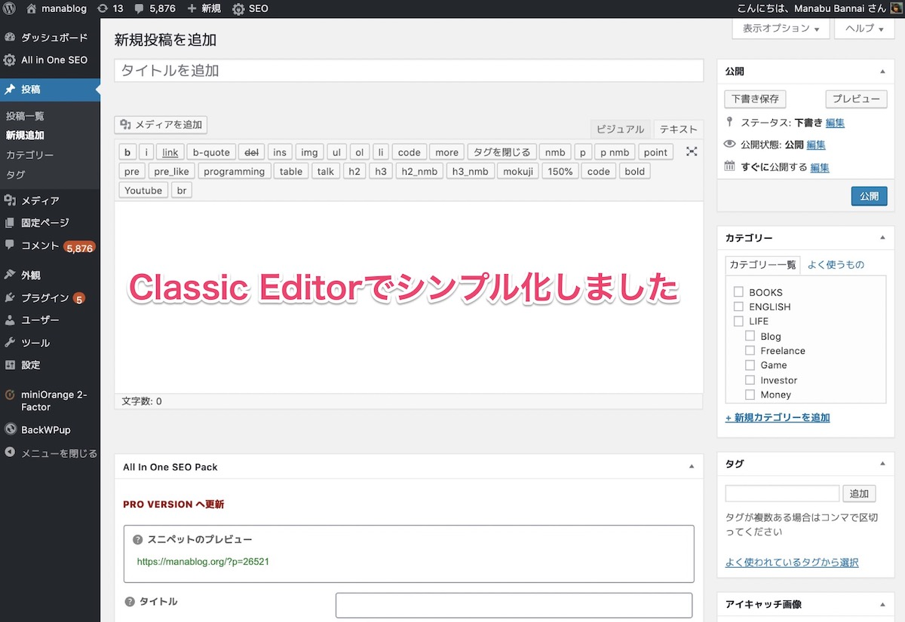
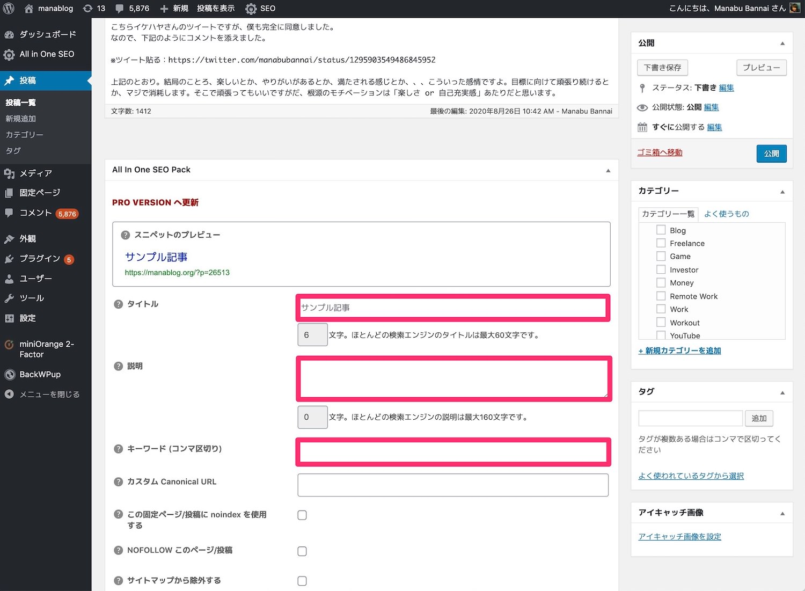
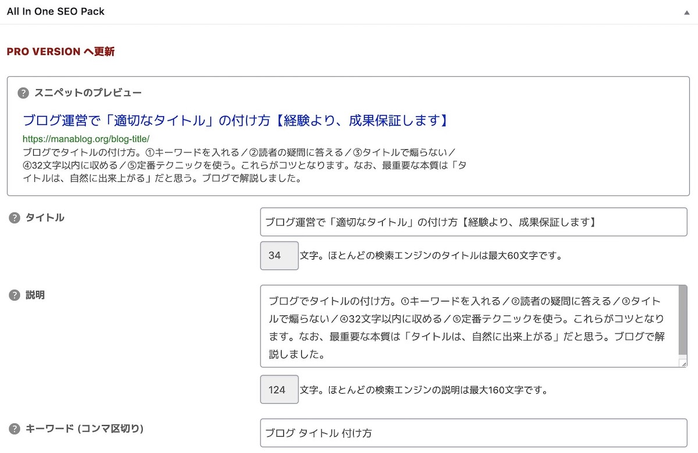

【WordPress】ブログ投稿する５つの手順【SEO最適化も、詳しく解説】
こんにちは、ゆーだいです。
ブログ歴は、約７年ほど。
ブログ収入は、月500万です。
今回は「ブログの投稿手順」を解説します。
SEO最適化しつつ、記事公開していく流れです。
かなり重要な部分なので、ぜひご覧くださいませ。
WordPressでブログ投稿する手順
{kind=link}
- 手順①：プラグインの導入
- 手順②：ブログ記事のコピペ
- 手順③：タグを設定していく
- 手順④：リストは高速挿入する
- 手順⑤：SEO対策の設定をする
上記の流れです。
あくまで「僕の手法」ですが、参考にしてみてください。
手順①：プラグインの導入
Classic Editor
Enables the previous “classic” editor and the old-style Edit Post screen with TinyMCE, Meta Boxes, etc. Supports all plugins that extend thi …
上記を導入します。
すると、WordPressの投稿画面を「シンプル化」できます。
こういった感じ。

こちら必須ではないのですが、バッチリSEO最適化をしたいなら、入れるべき。
これを入れないと、無駄なタグが入ってしまったりして、実は悪影響だったりします。
{kind=link}
※とはいえ、完全な必須ではありません。まずは僕のマネをしてみて、使いづらいなら、戻しても大丈夫です。
手順②：ブログ記事のコピペ
続いては、ブログ記事のコピペです。
僕は「Macの純正のメモ帳」に文章を書き、そしてWordPressにコピペしています。
補足：記事の書き方について
記事の書き方は「収益UPするアフィリエイト記事の書き方」の記事をご覧ください。
僕はこの方法で、年間5,000万を稼いでいます。
手順③：タグを設定していく
続いては「タグの挿入」をしていきます。
手順④：リストは高速挿入する
スイマセン。
こちらは、先ほどの動画で紹介しましたね。
Convert Markdown to HTML
Convert your markdown to HTML in one easy step – for free!
ちなみに、マークダウン記法は、覚えておくと色々と便利です。
もし気になる方がいたら、ちょろっとググってみるのもありです。
手順⑤：SEO対策の設定をする
最後はSEO設定です。
僕は「All In One SEO Pack」というプラグインを使っており、かなりオススメです。
All in One SEO Pack
The original WordPress SEO plugin, downloaded over 65,000,000 times since 2007.
SEO系のプラグインでしたら、これがトップクラスで人気なはず。
使い勝手もいいですし、セキュリティ面でも安心なので（使っている人が多いほど、セキュリティ面の安心にも繋がります）、オススメです。
※僕が使っているすべてのプラグインは「WordPressのおすすめプラグインは８つだけ。断言します」で紹介しています。
記入箇所は、３箇所だけ
下記の画像のとおり。

タイトル記入は、説明するまでもないですよね。
なお、タイトルの付け方は「ブログ運営で適切なタイトルの付け方」をどうぞ。
{kind=link}
続いて「説明」と書かれている部分ですが、これはSEO用語だと「ディスクリプション」と呼びます。
ここの記入方法は「meta descriptionの詳細解説」をどうぞ。
最後に「キーワード(コンマ区切り)」と書かれていますが、ここは「狙っているSEOキーワード」を記入して終わりです。

例えば上記の感じです。簡単ですよね。
{kind=link}
でも、ここまでしっかりやっているサイトは、世の中の少数派です。
ここまで作業して、かつ継続したら、徐々にブログのアクセスが増えていくと思いますよ。
というわけで、以上が「ブログ投稿の概要」なのですが、もう少し深堀りしようと思います。
次の項では「画像挿入＆公開前の準備」について解説します。
ブログ公開前の「準備」をしよう
{kind=link}
- 手順①：画像を探す
- 手順②：画像を軽量化する
- 手順③：画像を挿入する
- 手順④：URLの正規化をする
- 手順⑤：カテゴリ＆タグ設定
ちょっと量が多くて申し訳ないです。
しかし、１〜３回くらい作業したら、かなり慣れます。
僕は思考停止でも作業できる内容です。
手順①：画像を探す
まずは画像を探しましょう。
僕の場合だと「Shutterstock」という有料画像を使っています。
理由は、キレイだから。
無料画像だと、ちょっとショボくなるんですよね。有料がオススメです。
ブログに有料画像を使うべき理由【ブログ飯している僕が解説するよ】
「ブログに有料画像の導入を検討しています…。有料画像挿入のメリットや費用対効果を考えたいな。もし良さげなら、オススメの有料素材サイトも知りたいな。」←こういった疑問に答えます。本記事の内容：１．ブログに有料画像を使うべき理由／２．ブログにおすすめな有料画像サイトとは
手順②：画像を軽量化する
続いては画像の「軽量化」です。
ここは、できていない人が多い。
結論は下記のとおり。
- 横幅：1,200pxくらい
- 形式：jpg
まずは上記の設定をします。
ここのやり方がわからない人は「画像 リサイズ」とか「画像 jpg変換」で検索してください。
さらに「JPEGmini」を使おう
画像は、できるだけ軽量化した方がいいです。
その際には、下記を使います。
JPEGmini – The Photo Optimization Tool Trusted by Tens of Thousands Image Perfectionists
JPEGmini – The Photo Optimization Tool Trusted by Tens of Thousands Image Perfectionists
手順③：画像を挿入する
続いては画像挿入です。
動画でも解説していますが、画像サイズだけ気をつけましょう。
これは使っているWordPressテーマにもよるので、プレビューをクリックしつつ、サイズ確認するのが良いです。
手順④：URLの正規化をする
はい、お疲れさまです。そろそろ完了です。
URLの正規化について。
結論：わかりやすい英語にする
たまに「URLを日本語のままにしている」という人がいます。
それだと、SNSなどで拡散するときに、URLが長すぎて見づらいです。
なので、英語にしましょう。
ここは、とりあえず英語にしておけば、そこまで重要じゃないです。
手順⑤：カテゴリ＆タグ設定
最終パートです。
ここに関しては「カテゴリとタグの違いって、なんですか？」と聞かれることが多いです。
結論として「カテゴリとタグは、同じように設定したらOK」です。
もしくは、カテゴリが「人生」で、タグを「LIFE」でもOKです。
同じテーマの記事をカテゴリやタグでまとめることで、記事下の「関連記事」で表示されやすくなります。
というわけで、以上です
ここまで、お疲れさまでした。
以上で「WordPressへの記事投稿」が完了です。
ちょっと長いかもですが、、繰り返しですが、慣れです。
僕は慣れました。
そして、、スイマセン。最後にもう１つだけあります。
サイト公開後の、チェックリスト
サイト公開後のやることリスト８個＋２【WordPressをベースで解説】
「サイト公開後のチェックリストが欲しいなぁ…」こういったニーズがありそうなのでまとめました。基本的にはWordPressサイトをベースで解説します。サイト公開後のやることリストとしてご活用ください。
上記の設定をすると、完全に「SEO設定が完了した」という状態になります。
１日で、すべて完了すると思いますので、ぜひどうぞ。
それでは、お疲れさまでした。
ブログ生活を、楽しみましょう(｀･ω･´)ゞ
P.S：普段の僕は「Twitter」を軸に発信しています。また最近は「Webマーケ教材」の作成に注力しており、ネットで稼ぐスキルを学べます。ブログの更新通知はtwitterからお知らせします。